청소년상담사-3급(1교시) (2023-09-23 기출문제)
1과목: 발달심리
1. 영유아기에 나타나는 초기 언어 발달의 특징에 관한 내용으로 옳은 것을 모두 고른 것은?
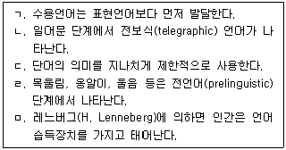
- ㄱ, ㄴ, ㄹ
- ㄱ, ㄴ, ㅁ
- ㄱ, ㄷ, ㄹ
- ㄴ, ㄷ, ㅁ
- ㄷ, ㄹ, ㅁ
(정답률: 63%)

2. 애착 이론에 관한 설명으로 옳은 것은?
- 회피애착아는 주양육자에 대한 분리불안이 높다.
- 저항애착아는 주양육자에게 양가적 태도를 보인다.
- 볼비(J. Bowlby)는 낯선 상황 실험을 고안해 애착을 측정하였다.
- 에인스워스(M. Ainsworth)는 애착형성을 4단계로 분류하였다.
- 할로우(H. Harlow)는 새끼조류의 행동을 연구해 각인 개념을 제시하였다.
(정답률: 72%)
3. 기억 발달에 관한 내용으로 옳은 것을 모두 고른 것은?
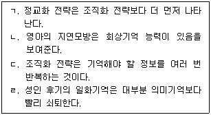
- ㄱ, ㄹ
- ㄴ, ㄷ
- ㄴ, ㄹ
- ㄱ, ㄴ, ㄷ
- ㄴ, ㄷ, ㄹ
(정답률: 63%)
4. 신생아의 발바닥을 간지럽히면 발가락을 벌렸다가 오므리는 반사 행동은?
- 걷기반사
- 모로반사
- 파악반사
- 근원반사
- 바빈스키반사
(정답률: 79%)
5. 피아제(J. Piaget)의 구체적 조작기에 관한 내용으로 옳은 것은?
- 보존개념이 획득된다.
- 비가역적 사고를 한다.
- 물활론적 사고를 한다.
- 자아중심성이 확장된다.
- 분류화, 서열화를 할 수 없다.
(정답률: 59%)
6. 다음에 해당하는 신체 및 운동발달의 원리는?
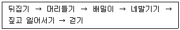
- 근원발달
- 대뇌발달
- 두미발달
- 위계발달
- 협응발달
(정답률: 58%)
7. 에릭슨(E. Erikson)의 발달 단계 중 (가) 시기에 해당하는 프로이트(S. Freud)의 발달 단계에 관한 설명으로 옳은 것을 모두 고른 것은?
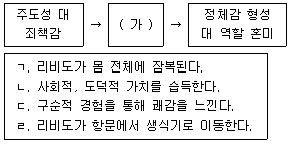
- ㄱ, ㄴ
- ㄴ, ㄷ
- ㄷ, ㄹ
- ㄱ, ㄴ, ㄷ
- ㄴ, ㄷ, ㄹ
(정답률: 75%)
8. 아동 A가 속한 피아제(J. Piaget)의 인지 발달 단계에 관한 설명으로 옳지 않은 것은?
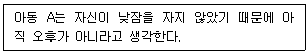
- 직관적 사고를 한다.
- 전환적 추론을 한다.
- 가역적 사고를 한다.
- 중심화 경향이 있다.
- 상징적 사고를 한다.
(정답률: 50%)
9. 생후 1개월 이내의 신생아에게 나타나는 발달 특성으로 옳지 않은 것은?
- 후각이 발달되어 있다.
- 원시반사 행동을 보인다.
- 끈적거리고 냄새가 없는 태변을 본다.
- 시각이 잘 발달되지 않아 가시거리가 짧다.
- 렘(REM) 수면의 비율이 일생 중 가장 낮다.
(정답률: 80%)
10. 마샤(J. Marcia)의 이론으로 A의 정체감 유형을 옳게 분석한 것은?
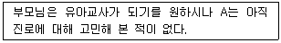
- 정체감 유실
- 정체감 혼미
- 정체감 유예
- 정체감 성취
- 정체감 획득
(정답률: 58%)
11. 두뇌 및 신경계 발달에 관한 내용으로 옳지 않은 것은?
- 변연계 중 편도체는 정서와 감정을 관장한다.
- 투쟁-도피 반응은 교감신경계 활성화와 관계있다.
- 시각피질의 시냅스 생성은 출생 후 1년까지 활발하게 진행된다.
- 베르니케 영역은 언어 산출을, 브로카 영역은 언어 이해를 담당한다.
- 출생 이후 전전두엽 피질의 활성화로 인지적 통제기능이 점차 향상된다.
(정답률: 72%)
12. 다음 행동이 처음 나타나는 피아제(J. Piaget)의 감각운동기 하위단계의 특성으로 옳지 않은 것은?
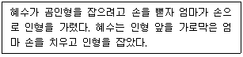
- 지연모방이 불가능하다.
- 두 가지 도식을 협응한다.
- A - not - B 오류가 나타난다.
- 대상영속성 개념이 형성되고 있다.
- 새로운 가능성 탐색을 위한 시행착오적 시도가 나타난다.
(정답률: 35%)
13. DSM-5의 지적장애 진단기준에 관한 내용으로 옳지 않은 것은?
- 현재의 심각도를 명시한다.
- 장애는 발달 시기 동안에 시작된다.
- 개념, 사회, 실행 영역에서 결함이 나타난다.
- 지적 기능의 결함만으로도 진단내릴 수 있다.
- 임상 평가와 표준화된 지능 검사로 확인된 지적 기능의 결함이 있다.
(정답률: 76%)
14. 브론펜브레너(U. Bronfenbrenner)의 이론에 관한 설명으로 옳은 것을 모두 고른 것은?
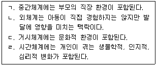
- ㄱ, ㄴ
- ㄷ, ㄹ
- ㄱ, ㄷ, ㄹ
- ㄴ, ㄷ, ㄹ
- ㄱ, ㄴ, ㄷ, ㄹ
(정답률: 60%)
15. 콜버그(L. Kohlberg)의 '헤인즈 딜레마'에 대하여 다음과 같은 대답이 나왔을 때, 이에 해당하는 콜버그의 도덕성 발달 단계는?
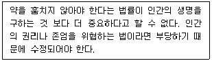
- 2단계
- 3단계
- 4단계
- 5단계
- 6단계
(정답률: 62%)
16. 다음의 ( )에 들어갈 피아제(J. Piaget) 이론의 개념은?
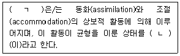
- ㄱ: 적응(adaptation), ㄴ: 평형(equilibrium)
- ㄱ: 적응(adaptation), ㄴ: 조직화(organization)
- ㄱ: 평형(equilibrium), ㄴ: 적응(adaptation)
- ㄱ: 평형(equilibrium), ㄴ: 조직화(organization)
- ㄱ: 조직화(organization), ㄴ: 평형(equilibrium)
(정답률: 67%)
17. 혼(J. Horn)과 카텔(R. Cattell)이 주장한 유동성 지능(fluid intelligence)에 관한 설명으로 옳지 않은 것은?
- 새로운 문제를 다루는 능력이다.
- 공간지각 및 추론 능력과 관련된다.
- 성인 중기 전후에 퇴보하기 시작한다.
- 유전적 요인에 의해 결정되는 지능이다.
- 어휘력 및 사회적 상황에 대한 반응으로 측정한다.
(정답률: 55%)
18. 퀴블러-로스(E. Kübler-Ross)가 제시한 죽음을 받아들이는 과정 중 다음과 같은 반응을 하는 단계는?
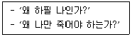
- 부정
- 분노
- 타협
- 우울
- 수용
(정답률: 75%)
19. 21번 염색체의 이상으로 나타나는 증후군은?
- 다운 증후군
- 터너 증후군
- XYY 증후군
- X결함 증후군
- 클라인펠터 증후군
(정답률: 80%)
20. DSM-5의 주요 및 경도 신경인지장애의 병인에 해당하는 것을 모두 고른 것은?
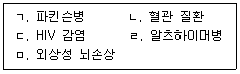
- ㄱ, ㄴ, ㄹ
- ㄱ, ㄷ, ㅁ
- ㄴ, ㄷ, ㄹ
- ㄱ, ㄴ, ㄹ, ㅁ
- ㄱ, ㄴ, ㄷ, ㄹ, ㅁ
(정답률: 55%)
21. 횡단 설계법에 관한 내용으로 옳은 것을 모두 고른 것은?
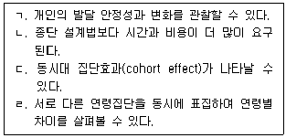
- ㄱ, ㄴ
- ㄱ, ㄷ
- ㄴ, ㄹ
- ㄷ, ㄹ
- ㄱ, ㄷ, ㄹ
(정답률: 69%)
22. 에릭슨(E. Erikson) 이론의 발달 과업과 샤이(K. Schaie) 이론의 발달 단계가 동일한 시기로 옳게 연결된 것은?
- 생산성 획득 - 책임 단계
- 자율성 획득 - 실행 단계
- 근면성 획득 - 성취 단계
- 자아통합 획득 - 획득 단계
- 정체감 획득 - 재통합 단계
(정답률: 50%)
23. 배아기(embryonic period)에 관한 내용으로 옳지 않은 것은?
- 태반, 탯줄, 양수가 발달한다.
- 외배엽으로부터 신경관이 형성된다.
- 심장이 형성되어 박동하기 시작한다.
- 임신 2주부터 8주까지의 기간에 해당한다.
- 빨기, 삼키기 등의 반사 반응이 나타난다.
(정답률: 79%)
24. 발달에 관한 설명으로 옳지 않은 것은?
- 성숙은 주로 학습과 환경의 영향을 받는다.
- 역사적 혹은 문화적 맥락은 발달에 영향을 미친다.
- 규준적(normative) 발달이란 전형적이고 평균적인 발달을 말한다.
- 가소성(plasticity)이란 경험에 반응하여 변화하는 능력을 의미한다.
- 발달은 생명의 시작에서 죽음에 이르기까지의 전 생애 동안 이루어지는 모든 과정이다.
(정답률: 58%)
25. 다음에서 설명하고 있는 노화이론은?
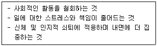
- 활동 이론(activity theory)
- 유리 이론(disengagement theory)
- 손상 이론(wear-and-tear theory)
- 사회정서적 선택 이론(socioemotional selectivity theory)
- 보상을 수반한 선택적 최적화 이론(selective optimization with compensation theory)
(정답률: 52%)
2과목: 집단상담의 기초
26. 집단상담 초기 단계에서 집단규범 형성을 위한 상담자의 역할로 옳지 않은 것은?
- 자기개방을 격려하기
- 비생산적인 행동에 대해 개입하기
- 솔직하고 자연스러운 언행을 촉진하기
- 집단원의 행동에 즉각적으로 논평하기
- 지금-여기에서 집단원의 느낌을 표현하도록 격려하기
(정답률: 81%)
27. 집단상담 제안서를 검토할 때 고려해야 할 내용으로 옳지 않은 것은?
- 집단의 필요성에 관한 합당한 근거를 제시하고 있는가?
- 집단에서 달성하고자 하는 목표는 무엇인가?
- 집단 모임시간, 횟수, 전체 시간이 제시되어 있는가?
- 목표 달성을 평가할 수 있는 전략이 있는가?
- 집단의 명시적 및 암묵적 규범이 구체적으로 제시되어 있는가?
(정답률: 72%)
28. 집단상담 구조화에 관한 설명으로 옳지 않은 것은?
- 이론적 배경에 따라 구조화의 정도와 종류가 다르다.
- 단기로 진행하는 심리교육집단은 대부분 비구조화 집단으로 운영한다.
- 초기 단계의 구조화는 집단원의 집단참여에 대한 불안을 어느 정도 줄여준다.
- 구조화 집단에서 갈등이 발생할 경우 구조화 활동을 잠시 미루고 갈등을 다루는 것이 바람직하다.
- 지나친 구조화는 집단의 발달을 방해한다.
(정답률: 71%)
29. 아동ㆍ청소년 집단상담에서 사용하는 전략으로 옳지 않은 것은?
- 부모나 특정 기관에 맞서서 전적으로 아동이나 청소년의 편을 들어야한다.
- 집단 종결 전에 집단원에게 어느 정도의 기간을 두고 종결 시점을 상기시켜 준다.
- 매 회기를 철저히 준비하되 주어진 회기마다 구성과 주제를 조절할 수 있는 융통성이 있어야 한다.
- 아동ㆍ청소년과 관련된 법률을 숙지하고 있어야 한다.
- 아동과 청소년이 집단에서 얻을 수 있는 이점을 학교 담당자, 교사, 부모에게 명확히 설명해야 한다.
(정답률: 80%)
30. 교류분석 집단상담에서 라켓(Racket)에 관한 설명으로 옳은 것은?
- 어린 시절에 격려 받고 학습되어진 친숙한 정서로써 다양한 상황에서 경험된다.
- 심리적 게임 후에는 사라지는 감정이다.
- 성인이 라켓을 사용하면 문제해결에 도움을 받을 수 있다.
- 아이의 부모가 허용했던 감정을 다른 감정으로 대체한 것이다.
- 사람들에게 어디로 가고 그 곳에서 무엇을 할 것인지를 말해주는 청사진이다.
(정답률: 50%)
31. 코리(G. Corey)의 집단상담 작업단계에 있는 집단원의 전형적인 특징을 모두 고른 것은?
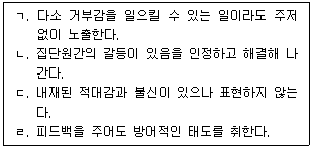
- ㄱ
- ㄱ, ㄴ
- ㄴ, ㄷ
- ㄱ, ㄴ, ㄷ
- ㄴ, ㄷ, ㄹ
(정답률: 66%)
32. 집단상담에서 얄롬(I. Yalom)의 '지금-여기'를 활성화 하는 상담자 개입으로 옳은 것은?
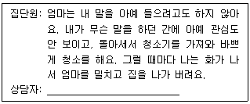
- 자신을 무시하는 엄마에게 몹시 화가 났었군요.
- 엄마가 왜 그런 식으로 관심을 보이지 않았을까요?
- 이번 일 말고 과거에도 엄마가 화를 낸 적이 있는지 이야기 해볼래요?
- 만약 본인이 이 집단 안에서 그런 식으로 화를 낸다면 어떤 사람에게 화를 낼 수 있나요?
- 혹시 학교에서나 친구들에게도 그런 식으로 화를 낸 적이 있나요? 그런 경험을 나누어 주면 어떨까요?
(정답률: 71%)
33. 얄롬(I. Yalom)의 치료적 요인에 해당하는 것을 모두 고른 것은?
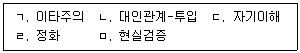
- ㄱ, ㄴ
- ㄴ, ㄷ, ㄹ
- ㄷ, ㄹ, ㅁ
- ㄱ, ㄴ, ㄷ, ㄹ
- ㄱ, ㄴ, ㄷ, ㄹ, ㅁ
(정답률: 48%)
34. 청소년 집단상담에서 상담자가 사용한 기법은?
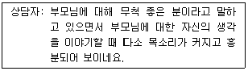
- 노출하기
- 직면하기
- 공감하기
- 요약하기
- 재진술하기
(정답률: 83%)
35. 얄롬(I. Yalom)의 치료적 요인 중 응집성에 관한 설명으로 옳은 것을 모두 고른 것은?
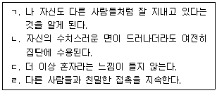
- ㄱ, ㄴ
- ㄷ, ㄹ
- ㄱ, ㄴ, ㄷ
- ㄴ, ㄷ, ㄹ
- ㄱ, ㄴ, ㄷ, ㄹ
(정답률: 41%)
36. 실존주의 집단상담의 목적으로 옳지 않은 것은?
- 집단원 자신을 신뢰하기
- 집단원 자신과 주변 세계에 대한 조망 확대하기
- 현재와 미래의 삶에 부여할 의미 명료화하기
- 과거, 현재, 미래의 위기에 대해 성공적으로 협상하기
- 미지의 영역 탐색에 대한 한계 규정하기
(정답률: 53%)
37. 아들러(A. Adler) 집단상담에서 초기기억 회상의 목적으로 옳은 것은?
- 초기 유아기의 트라우마 분석
- 자기, 타인, 세상, 윤리적 입장에 대한 개인의 확신 탐색
- 유아 시절 대상관계 역동의 분석
- 삶의 각본과 심리적 자세의 탐색
- 현상학적 자기와 실제 자기간의 일치점 발견
(정답률: 49%)
38. 집단상담 및 치료의 잠재적인 위험을 모두 고른 것은?
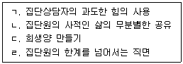
- ㄱ
- ㄱ, ㄴ
- ㄴ, ㄷ
- ㄴ, ㄷ, ㄹ
- ㄱ, ㄴ, ㄷ, ㄹ
(정답률: 78%)
39. 청소년 집단에서 비생산적인 집단에 개입할 상황으로 옳은 것을 모두 고른 것은?
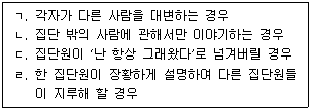
- ㄱ, ㄴ
- ㄷ, ㄹ
- ㄱ, ㄴ, ㄷ
- ㄴ, ㄷ, ㄹ
- ㄱ, ㄴ, ㄷ, ㄹ
(정답률: 74%)
40. 청소년 집단상담자의 개입 기술로 옳은 것은?
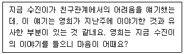
- 요약
- 반영
- 해석
- 재진술
- 연결하기
(정답률: 80%)
41. 비자발적인 청소년 집단상담에 관한 설명으로 옳지 않은 것은?
- 비밀유지의 한계에 대해 명확하게 알려준다.
- 집단원으로서의 책임과 권리를 인식할 수 있도록 한다.
- 감당할 수 있을 만큼의 자기개방을 하도록 안내한다.
- 참여하기 싫은 마음을 집단에서 개방적으로 논의하는 것은 바람직하지 않다.
- 집단을 완료하지 못할 경우 어떤 결과가 초래되는지 안내한다.
(정답률: 68%)
42. 집단상담의 치료적 요인과 집단원의 경험을 옳게 연결한 것은?
- 실존적 요인: “내 삶의 의미는 내가 찾아야 해. 내 삶에 책임을 지는 사람은 결국 나 자신이야.”
- 감정 정화: “이 집단을 통해 나의 문제를 해결하고 나 자신도 변화할 수 있을 거야.”
- 이타주의: “저 사람의 행동과 태도를 잘 관찰하고 배워서 따라해야겠다.”
- 자기노출: “내가 다른 사람에게 도움이 된 것 같아.”
- 동일시: “나만 외롭다고 생각했는데 아니구나.”
(정답률: 61%)
43. 집단상담에서 피드백(feedback)에 관한 설명으로 옳지 않은 것은?
- 긍정적인 피드백이 부정적인 피드백보다 더 잘 받아들여진다.
- 부정적인 피드백은 긍정적인 피드백 이후에 줄 때 더 쉽게 받아들여진다.
- 집단 초기 단계에서 상담자가 피드백 시범을 보이는 것은 집단원의 피드백 교환에 도움이 되지 않는다.
- 집단에서의 행동과 관련된 '지금-여기' 피드백이 모호한 피드백보다 더 도움이 된다.
- 집단 발달이 어느 정도 이루어지고 신뢰관계가 형성되었을 때 부정적인 피드백을 하는 것이 효과적이다.
(정답률: 69%)
44. 집단상담 평가에 관한 설명으로 옳지 않은 것은?
- 상담자가 집단상담 전후에 심리검사를 실시하여 집단원 행동 변화를 평가할 때 평가의 주체는 상담자, 평가 대상은 집단원이 된다.
- 집단상담 실시 이전에 집단상담 수요 평가, 집단원 행동 기초선 평가를 실시할 수 있다.
- 심리검사를 통해 수치화된 정보를 수집하고 통계적으로 분석하는 것을 양적 평가라 한다.
- 집단상담 계획단계에서부터 집단상담 평가에 대한 방향을 설정하여야 한다.
- 추수 평가는 집단상담 종결 회기에 실시한다.
(정답률: 60%)
45. 다음 상담자의 질문기법을 활용하는 집단상담 이론에 관한 설명으로 옳은 것은?
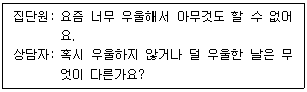
- 어린 시절 가족환경, 특히 부모와의 관계를 바탕으로 인생각본이 형성된다.
- 인간은 기본욕구인 생존, 사랑과 소속감, 힘, 자유, 즐거움에 의해 행동한다.
- 심리적 고통이나 문제는 당위주의에 바탕을 둔 비합리적 신념체계에서 비롯된다.
- 집단원이 자기 삶의 전문가이므로 상담자는 알지 못함의 자세를 취해야 한다.
- 인간은 전경과 배경의 원리에 따라 세상을 경험한다.
(정답률: 66%)
46. 다음의 집단원 특성이 나타나는 집단상담 발달단계에서 상담자의 역할로 옳은 것은?
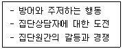
- 집단을 통해 학습한 새로운 행동을 일상생활에서 실천하게 한다.
- 집단의 목적, 규칙, 과정에 관하여 안내한다.
- 집단원의 저항을 자연스러운 반응으로 이해하고 존중한다.
- 집단원의 개인별 목표 설정을 돕는다.
- 집단원의 변화행동을 평가하고 지속적으로 수행하도록 격려한다.
(정답률: 74%)
47. 다음을 주요 개념으로 하는 집단상담의 기법으로 옳지 않은 것은?
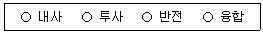
- 외재화
- 꿈작업
- 과장기법
- 빈의자기법
- 환상기법
(정답률: 48%)
48. 행동주의 집단상담에서 라자루스(A. Lazarus)의 BASIC-ID를 설명한 것으로 옳지 않은 것은?
- B: 행동과 습관, 반응은 어떠한가?
- S: 신체적 감각은 어떠한가?
- C: 문화적 배경은 어떠한가?
- I: 다른 사람과의 관계는 어떠한가?
- D: 약물, 물질 복용, 건강문제는 어떠한가?
(정답률: 57%)
49. 집단상담 종결 회기에서 상담자 개입으로 옳은 것을 모두 고른 것은?
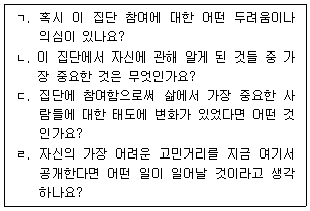
- ㄱ, ㄴ
- ㄱ, ㄹ
- ㄴ, ㄷ
- ㄴ, ㄷ, ㄹ
- ㄱ, ㄴ, ㄷ, ㄹ
(정답률: 75%)
50. 집단상담에서 공동지도자의 행동으로 옳은 것은?
- 집단회기 전후에 공동지도자와 집단에 대한 계획과 소감, 서로의 협력에 대해 논의한다.
- 공동지도자와 의사소통하지 않고 회기계획과 목표를 세운다.
- 공동지도자보다 자신이 더 좋은 사람으로 보이도록 노력한다.
- 공동지도자와 함께 촉진하는 대신에 돌아가며 한 회기씩 집단을 이끈다.
- 공동지도자와 옆자리에 앉아서 지속적으로 눈 맞춤과 사인을 주고받는다.
(정답률: 79%)
3과목: 심리측정 및 평가
51. 심리검사에 관한 설명으로 옳지 않은 것은?
- 한계보다 장점이 많으므로 모든 결과를 신뢰할 수 있다.
- 심리적 특성에 대한 개인간 차이 또는 개인내 차이를 확인하는 방법이다.
- 개인의 대표적인 행동표본을 심리학적 방법으로 측정한다.
- 심리적 구성개념을 측정하는 도구이다.
- 올바른 활용을 위해 기능과 용도를 정확하게 알아야 한다.
(정답률: 80%)
52. 다음에서 설명하는 유형의 척도는?
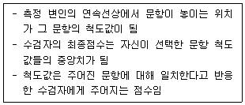
- 리커트 척도
- 써스톤 척도
- 가트만 척도
- 의미변별척도
- 형용사 검목표
(정답률: 57%)
53. 심리검사의 개발에 관한 설명으로 옳은 것은?
- 소음, 조명과 같은 물리적 환경은 수검자에게 영향을 미치지 않는다고 가정한다.
- 개발된 규준표는 개정하지 않아도 된다.
- 표집에서 얻은 자료를 토대로 규준표를 작성하게 된다.
- 문항분석을 하여 문제가 있는 문항이라도 제거하지 않는다.
- 개발자는 검사 실시 과정에서 발생할 수 있는 문제들을 고려하지 않아도 된다.
(정답률: 78%)
54. 심리검사의 규준과 해석에 관한 설명으로 옳은 것을 모두 고른 것은?
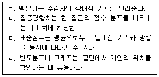
- ㄱ, ㄴ
- ㄷ, ㄹ
- ㄱ, ㄴ, ㄷ
- ㄴ, ㄷ, ㄹ
- ㄱ, ㄴ, ㄷ, ㄹ
(정답률: 61%)
55. 척도에 관한 설명으로 옳은 것은?
- 명명척도는 대상을 공통속성에 근거하여 둘 이상의 범주로 유목화하는 것이다.
- 비율척도는 절대영점이 존재하지 않는다.
- 서열척도는 대상을 절대 영점을 가진 동일-단위의 척도로 평정하는 것이다.
- 성별은 서열척도이다.
- 운동선수의 등번호는 비율척도이다.
(정답률: 64%)
56. 융(C. Jung)의 유형론을 근거로 제작된 심리검사로 옳은 것은?
- NEO-PI
- MMPI
- MBTI
- PAI
- CPI
(정답률: 72%)
57. 신뢰도에 관한 설명으로 옳지 않은 것은?
- 검사-재검사 신뢰도에서 시간 간격은 오차의 원인이 된다.
- 신뢰도는 측정점수의 일관성을 의미한다.
- 평정자 간 신뢰도를 산출하려면 두 명 이상의 평가자가 필요하다.
- 관찰자 간 일치도를 문항 간 신뢰도라 한다.
- 검사-재검사 신뢰도를 안정성계수라고도 한다.
(정답률: 64%)
58. 신뢰도에 영향을 주는 요인으로 옳은 것을 모두 고른 것은?
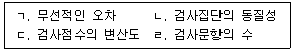
- ㄱ, ㄹ
- ㄴ, ㄷ
- ㄱ, ㄴ, ㄷ
- ㄴ, ㄷ, ㄹ
- ㄱ, ㄴ, ㄷ, ㄹ
(정답률: 71%)
59. 타당도에 관한 설명으로 옳은 것은?
- 문항들이 측정하고자 하는 영역을 얼마나 대표하는지를 말한다.
- 구인타당도는 요인분석을 통해 검증할 수 없다.
- 안면타당도는 다른 점수와의 관계를 분석하여 추정한다.
- 예언타당도는 준거타당도에 속하지 않는다.
- 수검자의 반응경향이나 허위반응은 타당도에 영향을 주지 않는다.
(정답률: 64%)
60. 심리검사 실시에서 라포 형성에 관한 설명으로 옳지 않은 것은?
- 감정적 유대, 작업동맹이라고도 한다.
- 상호 간에 감정적으로 친밀하게 느끼는 인간관계를 의미한다.
- 수검자가 협력적인 태도를 갖도록 동기를 유발하는 우호적 분위기를 의미한다.
- 수검자에게 전문적인 용어를 사용할 때 형성된다.
- 아동을 대상으로 개인검사를 실시할 때 필수적이다.
(정답률: 77%)
61. 심리검사자의 윤리에 관한 설명으로 옳지 않은 것은?
- 심리검사를 정확하게 실시하고 해석하기 위한 훈련이 필요하다.
- 수검자의 권리를 보호해야 한다.
- 검사결과가 한 개인을 낙인찍지 않도록 주의를 기울여야 한다.
- 하나의 심리검사 결과만으로 개인을 판단해서는 안 된다.
- 수검자에게 검사 결과만을 알려주어야 한다.
(정답률: 81%)
62. 심리검사에 관한 설명으로 옳지 않은 것은?
- 성격검사는 객관적 검사와 투사적 검사로 구분할 수 있다.
- 대표적인 투사적 검사로 로샤검사와 주제통각검사가 있다.
- 검사자의 숙련도는 검사결과에 영향을 준다.
- 인원수에 따라 개별검사와 집단검사로 구분할 수 있다.
- 객관적 검사는 투사적 검사에 비해 독특한 개인의 반응을 이끌어 낼 수 있다.
(정답률: 76%)
63. 가드너(H. Gardner)의 다중지능에 해당하는 내용을 모두 고른 것은?
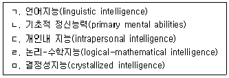
- ㄱ, ㄴ
- ㄱ, ㄷ, ㄹ
- ㄴ, ㄷ, ㄹ
- ㄷ, ㄹ, ㅁ
- ㄴ, ㄷ, ㄹ, ㅁ
(정답률: 63%)
64. 지능의 개념과 측정에 관한 설명으로 옳지 않은 것은?
- 연령규준을 설정할 때 성인보다 아동의 경우 연(월) 간격을 좁게 한다.
- 스피어만(C. Spearman)은 지능이 일반요인과 특수요인으로 구성되어 있다고 주장하였다.
- 써스톤(L. Thurstone)은 지능에 대해 7가지의 기초정신능력을 제시하였다.
- 웩슬러지능검사는 축적된 지능을 측정할 수 있는 집단용 지능검사이다.
- 길포드(H. Guilford)는 지능의 3차원 구조모델을 제시하였다.
(정답률: 62%)
65. K-WISC-IV의 지각추론지표(PRI)에 해당하는 소검사로 옳은 것은?
- 숫자
- 지우기
- 공통성
- 토막짜기
- 기호쓰기
(정답률: 73%)
66. K-WISC-IV의 실시와 채점에 관한 설명으로 옳지 않은 것은?
- 핵심소검사 시행이 어려운 경우에 적절한 보충소검사로 대체할 수 있다.
- 소검사 대체는 각 지표점수 내에서 단 한 번씩만 허용된다.
- 토막짜기 소검사는 연속하여 5문항이 0점일 때 중지한다.
- 시간을 초과하여 정답을 맞힌 경우에는 정답으로 채점하지 않는다.
- 추가질문을 사용했을 때 기록용지에 Q로 표기한다.
(정답률: 55%)
67. MMPI-2 척도에 관한 설명으로 옳지 않은 것은?
- ES척도는 자아강도를 나타내는 보충척도이다.
- F척도는 이상반응 경향성을 탐지하기 위한 척도이다.
- L척도의 상승은 자신을 완벽하고 이상적으로 가장하려는 경향성을 나타낸다.
- D는 우울 증상을 측정하는 임상척도이다.
- PSYC는 정신증을 나타내는 타당도척도이다.
(정답률: 56%)
68. MMPI-2에서 반사회적 행동을 나타내는 재구성 임상척도로 옳은 것은?
- RCd
- RC1
- RC2
- RC3
- RC4
(정답률: 58%)
69. MMPI-A 내용척도에서 높은 점수를 보인 청소년에 관한 설명으로 옳은 것은?
- A-dep: 이치에 맞지 않는 걱정과 사소한 일을 걱정한다.
- A-biz: 매우 이상한 사고와 경험을 보고한다.
- A-cyn: 다른 사람들과 커다란 정서적 거리감을 느낀다.
- A-con: 수줍음이 많고 혼자 있는 것을 선호한다.
- A-fam: 절도, 거짓말, 기물파손, 반항적 행동 등을 보인다.
(정답률: 46%)
70. 개인이 정보를 인식하는 방식의 경향성을 반영하는 MBTI 선호지표로 옳은 것은?
- 감각형-직관형(SN)
- 외향성-내향성(EI)
- 사고형-감정형(TF)
- 판단형-인식형(JP)
- 능동형-수동형(AP)
(정답률: 62%)
71. 홀랜드(J. Holland)의 직업적 성격에서 사회적(Social)유형이 선호하는 직업에 해당하지않는 것은?
- 사회복지사
- 교육자
- 엔지니어
- 간호사
- 언어재활사
(정답률: 80%)
72. PAI의 치료척도를 모두 고른 것은?
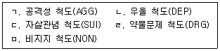
- ㄱ, ㄴ, ㄷ
- ㄱ, ㄷ, ㅁ
- ㄴ, ㄷ, ㄹ
- ㄴ, ㄹ, ㅁ
- ㄷ, ㄹ, ㅁ
(정답률: 37%)
73. 객관적 검사와 비교하여 투사적 검사에 관한 설명으로 옳지 않은 것은?
- 채점 및 해석이 어렵다.
- 검사자극이 불분명하고 모호하다.
- 개인의 반응이 다양하게 표현된다.
- 검사자 변인이나 검사 상황변인의 영향을 덜 받는다.
- 수검자의 자기 방어가 어렵다.
(정답률: 70%)
74. 문장완성검사(SCT)에 관한 설명으로 옳은 것은?
- 자유연상을 이용한 투사검사이다.
- 개인용 검사로만 사용된다.
- 수검자의 검사 시작 시간과 끝낸 시간은 기록하지 않는다.
- 정답과 오답이 있다.
- 검사 후 검사자가 질문을 하면 안된다.
(정답률: 72%)
75. 주제통각검사(TAT)에 관한 설명으로 옳지 않은 것은?
- 대인관계의 역동적 측면을 파악하는 데 유용하다.
- 주제는 개인의 내적 욕구와 환경적 압력의 결합을 의미한다.
- 백지카드를 포함한 흑백과 컬러의 그림카드로 이루어져 있다.
- 개인의 욕구가 이야기 속의 동일시한 인물을 통해 투사된다.
- 수검자가 비구성적인 장면을 완성하면서 자신의 성격을 드러낸다.
(정답률: 70%)
4과목: 상담이론
76. 접수면접 시 상담자의 역할로 옳지 않은 것은?
- 내담자 기본 정보 수집
- 호소문제 확인
- 작업동맹 확립
- 현재의 기능수준 파악
- 스트레스 정도 및 위험요인 평가
(정답률: 72%)
77. 상담기록에 관한 설명으로 옳지 않은 것은?
- 상담회기보고서는 상담의 진행과정을 기록한 문서이다.
- 축어록은 상담자와 내담자가 상담과정에서 나눈 대화를 녹음한 원자료이다.
- 상담기록부 파일은 상담관리를 위한 것으로 내담자의 이름과 일련번호가 기록된다.
- 상담종결보고서에는 상담 시작에서 종결까지 진행되어 온 상담과정의 요약과 상담 성과의 평가가 포함된다.
- 상담 신청 시 작성하는 상담신청서에는 내담자에 관한 최소한의 정보가 수록된다.
(정답률: 64%)
78. 다음 설명에 해당하는 키치너(K. Kitchener)의 윤리적 의사결정 원칙으로 옳은 것은?
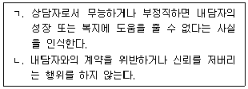
- ㄱ: 무해성(nonmaleficence), ㄴ: 공정성(justice)
- ㄱ: 선의(beneficence), ㄴ: 충실성(fidelity)
- ㄱ: 무해성(nonmaleficence), ㄴ: 충실성(fidelity)
- ㄱ: 선의(beneficence), ㄴ: 공정성(justice)
- ㄱ: 자율성(autonomy), ㄴ: 선의(beneficence)
(정답률: 54%)
79. 상담윤리에 합당한 청소년상담자의 행동은?
- 상담을 중단하고 싶어 하는 내담자를 설득하여 정해진 상담 횟수를 채우고 종결하였다.
- 교육을 받지 않은 심리검사를 시험 삼아 친구들에게 실시하고 해석하였다.
- 내담자의 신상이 드러나지 않도록 조치를 취하여 수퍼비전을 받은 후 내담자에게 동의를 구했다.
- 조현병의 전조 증상을 보이는 내담자를 상담하는 데 어려움을 느껴 다른 전문가에게 의뢰하였다.
- 사이버상담의 특성상 내담자의 전자 전송 자료에 여러 사람의 접근이 가능하다는 사실을 내담자에게 고지하지 않았다.
(정답률: 77%)
80. 내담자 A가 경험한 상담의 치료적 요인으로 옳은 것은?
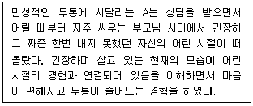
- 통찰
- 둔감화
- 일치 경험
- 관점 변화
- 보편성
(정답률: 66%)
81. 방어기제와 예시의 연결이 옳은 것을 모두 고른 것은?
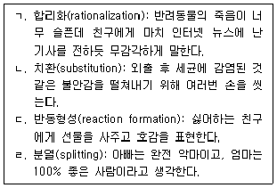
- ㄱ, ㄴ
- ㄱ, ㄷ
- ㄴ, ㄷ
- ㄷ, ㄹ
- ㄴ, ㄷ, ㄹ
(정답률: 58%)
82. 정신분석에 관한 설명으로 옳은 것을 모두 고른 것은?
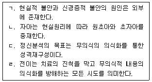
- ㄱ, ㄴ
- ㄴ, ㄷ
- ㄷ, ㄹ
- ㄱ, ㄴ, ㄷ
- ㄱ, ㄴ, ㄷ, ㄹ
(정답률: 68%)
83. 다음 설명에 해당하는 상담접근으로 옳은 것은?
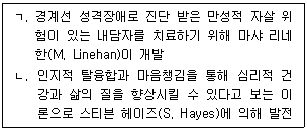
- ㄱ: 변증법적 행동치료, ㄴ: 수용전념치료
- ㄱ: 수용전념치료, ㄴ: 변증법적 행동치료
- ㄱ: 변증법적 행동치료, ㄴ: 마음챙김기반 인지치료
- ㄱ: 실존치료, ㄴ: 수용전념치료
- ㄱ: 대상관계치료, ㄴ: 마음챙김기반 인지치료
(정답률: 38%)
84. 내담자의 알아차림을 촉진하기 위한 게슈탈트 상담자의 개입으로 옳지 않은 것은?
- 과거에는 그 문제에 어떻게 대처했나요?
- 생각을 멈추고 지금 느끼는 감정에 집중해보세요.
- 당신이 가장 원하는 것은 무엇인가요?
- 당신의 손은 무엇을 말하려고 하나요?
- 눈을 감고 그 사람의 얼굴을 떠올려 보세요.
(정답률: 64%)
85. 상담의 통합적 접근에 관한 설명으로 옳은 것을 모두 고른 것은?
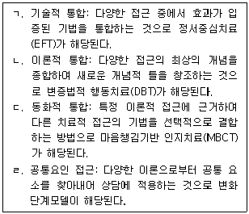
- ㄱ, ㄴ
- ㄱ, ㄷ
- ㄴ, ㄷ
- ㄴ, ㄹ
- ㄷ, ㄹ
(정답률: 36%)
86. 합리적 정서행동상담(REBT)의 ABCDE 모델에 관한 설명으로 옳지 않은 것은?
- A: 촉발사건
- B: 촉발사건에 대한 신념
- C: 비합리적 신념의 결과로 나타난 부정적 감정과 행동
- D: 비합리적 신념에 대한 논박
- E: 자기실현 경향성 회복
(정답률: 68%)
87. 상담 구조화에 포함되어야 할 내용을 모두 고른 것은?
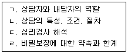
- ㄱ
- ㄱ, ㄷ
- ㄴ, ㄹ
- ㄱ, ㄴ, ㄹ
- ㄴ, ㄷ, ㄹ
(정답률: 72%)
88. 인지치료에 관한 설명으로 옳지 않은 것은?
- 자가치료(self-treatment)의 철학을 강조한다.
- 인지도식은 과거경험을 일반화한 인지적 구조로 자신과 세상 등에 대한 신념으로 구성된다.
- 핵심신념은 개인이 어떻게 생각하고 느끼고 행동하는지에 대한 기본이 된다.
- 중간신념은 핵심신념으로부터 나온 태도, 규칙, 기대, 가정 등으로 구성된다.
- 자동적 사고는 누구나 즉시 인식할 수 있다.
(정답률: 67%)
89. 교류분석 상담자의 개입으로 옳은 것은?
- 어른 자아를 중심으로 어버이 자아, 어린이 자아가 균형 있게 기능하도록 돕는다.
- 계약-교류분석-구조분석-각본분석-게임분석-재결단 순으로 상담을 진행한다.
- 교류분석을 통해 내담자가 교차교류를 할 수 있도록 격려한다.
- 라켓을 통해서 느끼는 감정이 아닌 자신의 진정한 감정을 느끼고 표현할 수 있도록 한다.
- 내담자가 게임을 지속할 수 있도록 긍정적 스트로크를 제공한다.
(정답률: 51%)
90. 해결중심상담에 관한 설명으로 옳은 것은?
- '잘 알지 못함(not-knowing)'의 자세를 취하고 내담자를 전문가로 여긴다.
- 문제가 발생하는 상황을 구체적으로 탐색한다.
- 문제의 해결에 초점을 맞추고 근본적인 변화를 강조한다.
- 내담자의 취약한 점과 강점을 모두 고려한다.
- 다양한 질문기법을 활용해 문제의 원인을 파악한다.
(정답률: 50%)
91. 여성주의 상담에 관한 설명으로 옳지 않은 것은?
- 상담자와 내담자의 평등한 관계를 지향한다.
- 내담자의 문제를 유발한 사회ㆍ문화적 요인에 초점을 맞춘다.
- 내담자가 힘을 회복하여 자신의 권리를 지킬 수 있도록 한다.
- 남성과 여성의 성역할 및 행동의 차이는 사회화에 기인한 것으로 본다.
- 남녀를 동질적 존재로 보는 알파편견은 남녀의 삶 사이에 존재하는 차이를 간과할 위험이 있다.
(정답률: 58%)
92. 현실치료의 WDEP모델을 순서대로 나열한 것은?
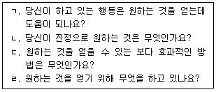
- ㄱ - ㄴ - ㄹ – ㄷ
- ㄴ - ㄹ - ㄱ – ㄷ
- ㄴ - ㄹ - ㄷ - ㄱ
- ㄷ - ㄱ - ㄴ – ㄹ
- ㄹ - ㄴ - ㄱ - ㄷ
(정답률: 68%)
93. 상담이론별 심리적 부적응의 원인으로 옳지 않은 것은?
- 게슈탈트 상담: 접촉 경계 장애
- 정신분석: 자아기능의 약화, 미숙한 방어기제
- 개인심리학: 공동체 의식과 사회적 관심의 결여
- 실존주의 상담: 심리기능의 불균형, 외상경험의 억압
- 인간중심 상담: 가치의 조건화, 자기와 경험의 불일치
(정답률: 59%)
94. 행동주의 상담기법에 관한 설명으로 옳지 않은 것은?
- 체계적 둔감법은 고전적 조건형성과 상호제지원리를 토대로 하였다.
- 교통법규를 위반했을 때 내는 과태료는 반응대가에 해당한다.
- 타임아웃, 과잉교정, 홍수법은 처벌의 일종이다.
- 내현적 모델링은 모델을 관찰할 수 없을 때, 내담자가 모델의 행동을 시각적으로 떠올려 보도록 하는 기법이다.
- 다이어트를 위해 친구들과 만나는 약속을 자제하는 것은 자극통제에 해당한다.
(정답률: 55%)
95. 다음 사례의 상담자 반응에 해당하는 인간중심상담의 기법은?
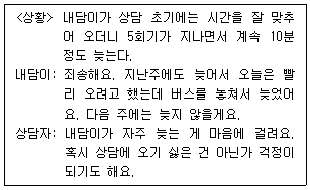
- 반영
- 진솔성
- 명료화
- 공감적 이해
- 무조건적 긍정적 존중
(정답률: 71%)
96. 사례개념화의 구성요소에 포함되는 것을 모두 고른 것은?
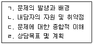
- ㄱ, ㄴ
- ㄱ, ㄷ
- ㄴ, ㄹ
- ㄱ, ㄷ, ㄹ
- ㄱ, ㄴ, ㄷ, ㄹ
(정답률: 69%)
97. 상담기법과 설명의 연결이 옳은 것은?
- 재진술: 내담자의 문제를 새로운 관점에서 조망할 수 있도록 설명해주는 것
- 직면: 내담자의 불일치하거나 모순된 부분을 자각하도록 해주는 것
- 해석: 내담자가 말한 둘 이상의 언어적 표현을 요약하는 것
- 정보제공: 내담자의 말에 담긴 주된 감정을 상담자의 말로 되돌려 주는 것
- 반영: 내담자에게 필요한 특정 주제에 대한 객관적 자료나 사실을 전달하는 것
(정답률: 74%)
98. 해결중심 상담의 질문기법과 예시의 연결이 옳은 것을 모두 고른 것은?
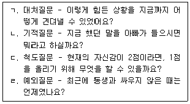
- ㄱ, ㄴ
- ㄷ, ㄹ
- ㄱ, ㄷ, ㄹ
- ㄴ, ㄷ, ㄹ
- ㄱ, ㄴ, ㄷ, ㄹ
(정답률: 61%)
99. 상담 중기단계에 관한 설명으로 옳지 않은 것은?
- 자신의 문제에 대한 통찰을 얻는다.
- 사고의 경직성에서 벗어나 융통성을 갖게 된다.
- 주호소 문제를 탐색한다.
- 실제적인 변화를 결심한다.
- 새로운 대안을 찾고 실천한다.
(정답률: 55%)
100. 다음 사례의 내담자 B에 해당하는 개인심리학의 생활양식 유형은?
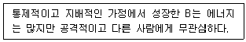
- 저항형
- 비난형
- 기생형
- 회피형
- 지배형
(정답률: 60%)